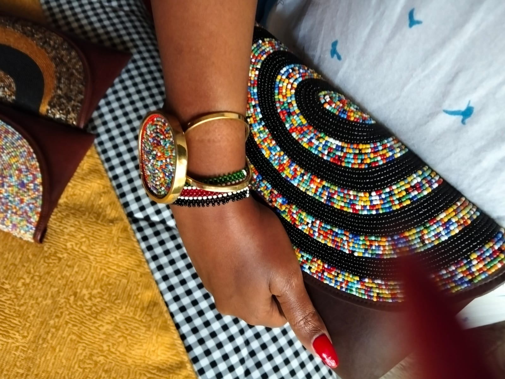
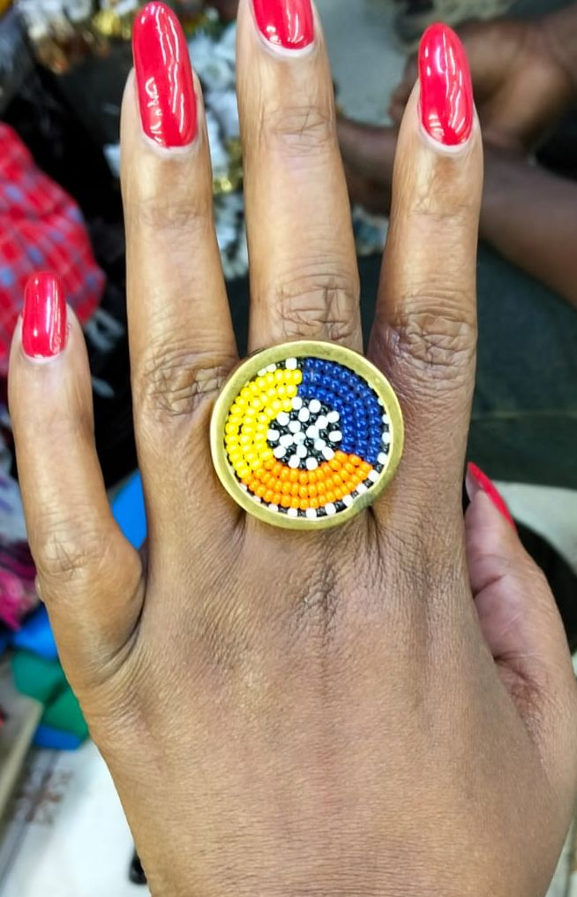

Sustainable Designs
Designed with natural materials and craftsmanship that honors tradition.
Authentic African Jewelry
Discover a curated collection of necklaces, bracelets, earrings, and accessories created by artisans across Africa.
Designed with natural materials and craftsmanship that honors tradition.
Your purchase supports independent African makers and fair trade communities.
Every piece is limited and thoughtfully curated for confident everyday wear.
Featured collection

Maasai-style beaded purse featuring vibrant, multicolored patterns.Across the continent, from the intricate Maasai and Samburu patterns of East Africa to the royal Yoruba crown-beading traditions of West Africa and the vibrant Zulu and Xhosa language of beads in Southern Africa, glass and ceramic beads have historically served as a form of currency, status, and communication.

Classic brass rings with heritage-inspired shapes and polish.A traditional African beaded ring relies on the collective impact of hundreds of tiny seed beads (shanga or enanga) woven into continuous, tactile patterns. It is a language wrapped directly around your fingers.

In African traditions, the wrist is a highly intentional canvas. Across the continent, from East Africa's broad Maasai cuffs to Southern Africa's delicate Zulu love-letter bands and West Africa's royal Yoruba seed strands, bracelets serve as a living, breathing social map.
Made with intention